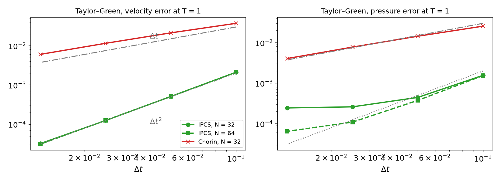
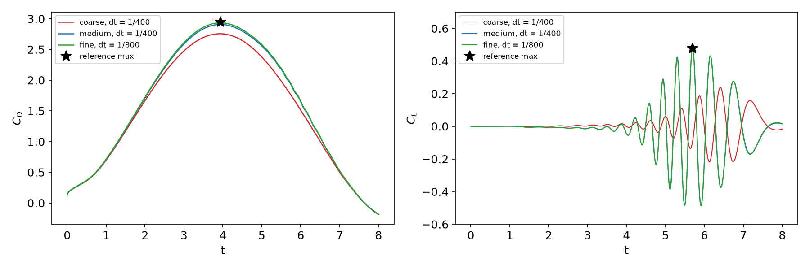
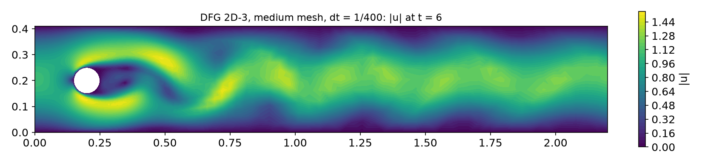

AI-based Materials and Process Simulation I
Week 14 — Navier–Stokes: Projection Methods (Chorin, IPCS) · CFL · Channel Flow · DFG 2D-3 Flow past a Cylinder
Process Systems Laboratory
Department of Chemical and Biomolecular Engineering, SeoulTech
Today
| Part | Topic | Time |
|---|---|---|
| Quiz | Week 13 (Péclet, Galerkin oscillations, SUPG) | 10 min |
| A | Theory — incompressible NS, projection (Chorin), IPCS, the nonlinear term, CFL | 50 min |
| B | DOLFINx 0.11 — three forms, three solvers, drag and lift, curved meshes | 35 min |
| C | Measurements — Taylor–Green, channel, DFG 2D-3, time step | 40 min |
| D | LLM pitfalls with time-dependent flow solvers · HW13 | 15 min |
Lab notebook: W14_lab.ipynb · Homework: W14_HW13.ipynb (due before Week 15)
Where we are
| Week | Ingredient | Used today |
|---|---|---|
| 10 | θ-method, Crank–Nicolson, stability vs accuracy | time discretization of the momentum equation |
| 11 | Taylor–Hood P2/P1, inf-sup, pressure constant | the spatial pair |
| 12 | saddle-point solvers | avoided — by splitting |
| 13 | convection, Péclet number | the convection term, now nonlinear: cell Reynolds number |
| 14 | incompressible Navier–Stokes, unsteady | projection methods |
| 15 | steady NS by Newton, Re continuation, cavity | the other route |
Every time step of a fully coupled scheme is a nonlinear saddle-point problem (Week 9 × Week 12). Projection methods split it into three linear, symmetric or nearly symmetric problems — each solved with the tools of Weeks 5 and 12.
Part A — Theory
§A1 The incompressible Navier–Stokes equations
\rho\big(\partial_t\mathbf u+(\mathbf u\cdot\nabla)\mathbf u\big)-\mu\Delta\mathbf u+\nabla p=\mathbf f,\qquad\nabla\cdot\mathbf u=0,\qquad\mathrm{Re}=\frac{\rho UL}{\mu}.
- The pressure is again a Lagrange multiplier (Week 11); no evolution equation, no initial condition, no “pressure boundary condition” in the PDE.
- Nonlinear convection (\mathbf u\cdot\nabla)\mathbf u: Week 13’s convection with a velocity that is itself the unknown.
- Weak form (Taylor–Hood): \big(\rho\partial_t\mathbf u+\rho(\mathbf u\cdot\nabla)\mathbf u,\mathbf v\big)+\mu(\nabla\mathbf u,\nabla\mathbf v)-(p,\nabla\cdot\mathbf v)+(q,\nabla\cdot\mathbf u)=(\mathbf f,\mathbf v).
- Do-nothing outflow: with the \nabla\mathbf u form, the natural condition is \mu\partial_n\mathbf u-p\mathbf n=0 — prescribing p=0 at the outlet and nothing for \mathbf u.
- A prescribed pressure p=p_0 on part of the boundary enters the momentum equation as the boundary term \int p_0\,\mathbf v\cdot\mathbf n\,ds (integration by parts of \nabla p).
§A2 Chorin’s projection (1968)
Helmholtz–Hodge decomposition
Every \mathbf w\in L^2(\Omega)^d splits uniquely and L^2-orthogonally into \mathbf w=\mathbf u+\nabla\phi with \nabla\cdot\mathbf u=0, \mathbf u\cdot\mathbf n=0 on \partial\Omega.
- Momentum without pressure: \rho\frac{\mathbf u^*-\mathbf u^n}{\Delta t}+\rho(\mathbf w\cdot\nabla)\mathbf u^{n+\frac12}-\mu\Delta\mathbf u^{n+\frac12}=\mathbf f, \mathbf u^*=\mathbf g on \partial\Omega.
- Pressure Poisson: \Delta p^{n+1}=\frac{\rho}{\Delta t}\nabla\cdot\mathbf u^*, \ \partial_np^{n+1}=0.
- Projection: \mathbf u^{n+1}=\mathbf u^*-\frac{\Delta t}{\rho}\nabla p^{n+1} — the divergence-free part of \mathbf u^*.
- \partial_np=0 is not a property of the true pressure: a numerical boundary layer, and a splitting error O(\Delta t) for velocity and pressure.
- At a steady state \mathbf u^*-\mathbf u^n=\frac{\Delta t}{\rho}\nabla p: the momentum equation holds only up to O(\Delta t) — even a steady flow is not reproduced.
§A3 Incremental pressure correction (IPCS)
Goda (1979), van Kan (1986): put the old pressure into step 1 and correct by the increment \phi=p^{n+1}-p^n.
- \rho\frac{\mathbf u^*-\mathbf u^n}{\Delta t}+\rho(\mathbf w\cdot\nabla)\mathbf u^{n+\frac12}-\mu\Delta\mathbf u^{n+\frac12}+\nabla p^n=\mathbf f, \quad\mathbf u^*=\mathbf g on \partial\Omega
- \Delta\phi=\frac\rho{\Delta t}\nabla\cdot\mathbf u^* (with the pressure boundary data for \phi where p is prescribed)
- \mathbf u^{n+1}=\mathbf u^*-\frac{\Delta t}{\rho}\nabla\phi, \quad p^{n+1}=p^n+\phi
- Steady state: \phi=0 ⇒ \nabla\cdot\mathbf u^*=0, \mathbf u^{n+1}=\mathbf u^* and step 1 is the discrete steady NS equation — consistent.
- Splitting error now O(\Delta t^2) for the velocity in L^2 (with Crank–Nicolson in step 1); the pressure still carries a boundary layer from the artificial Neumann condition on \phi (rotational form: Timmermans, Guermond–Shen — beyond this course).
- Cost per step: one convection–diffusion solve (non-symmetric), one Poisson solve (SPD), one mass-matrix solve (SPD, well conditioned).
§A4 The nonlinear term: semi-implicit
\rho(\mathbf w\cdot\nabla)\mathbf u^{n+\frac12},\qquad \mathbf w=\tfrac32\mathbf u^n-\tfrac12\mathbf u^{n-1}\ \text{(Adams–Bashforth)},\qquad \mathbf u^{n+\frac12}=\tfrac12(\mathbf u^*+\mathbf u^n)\ \text{(Crank–Nicolson)}.
- The convecting velocity is extrapolated (second order), the convected velocity is implicit: step 1 is linear — no Newton iteration.
- The matrix of step 1 contains (\mathbf w\cdot\nabla): it changes every step and must be re-assembled; steps 2 and 3 have constant matrices.
- In UFL: (\mathbf w\cdot\nabla)\mathbf u =
dot(w, nabla_grad(u))(nabla_grad(u)[i, j]=\partial_iu_j) =dot(grad(u), w).
| Treatment of convection | per step | stability |
|---|---|---|
| fully implicit (\mathbf u^{n+1}\cdot\nabla)\mathbf u^{n+1} | nonlinear (Newton) | unconditional |
| semi-implicit (above) | linear | no CFL limit from convection |
| fully explicit (\mathbf w\cdot\nabla)\mathbf w | mass matrix only | CFL-limited; with central (Galerkin) convection AB2 is not stable on the imaginary axis |
§A5 CFL and the cell Reynolds number
\mathrm{CFL}=\frac{|\mathbf u|\,\Delta t}{h},\qquad \mathrm{Re}_h=\frac{|\mathbf u|\,h}{\nu}\quad(\text{Week 13: }\mathrm{Pe}_h=\mathrm{Re}_h/2).
- CFL compares the distance traveled in one step with the cell size. Explicit schemes need CFL \lesssim1 for stability; with the semi-implicit scheme CFL \lesssim1 is an accuracy guideline (a vortex should not jump over a cell per step).
- \mathrm{Re}_h decides whether the Galerkin discretization of convection oscillates (Week 13). At \mathrm{Re}=100 on the meshes below \mathrm{Re}_h\approx10–30 at the cylinder; P2 and the smooth flow keep the solution free of visible wiggles, but higher Re needs SUPG/PSPG or grad-div stabilization.
DFG 2D-3: \nu=10^{-3}, |\mathbf u|\lesssim2, h_{\min}=r/3\dots r/10 (0.017\dots0.005): CFL = 1 at \Delta t\approx h/2=8\times10^{-3}\dots2.5\times10^{-3}.
Part B — Navier–Stokes in DOLFINx 0.11
§B1 Three forms
U = 0.5 * (u + u_n) # Crank-Nicolson
w = 1.5 * u_n - 0.5 * u_n1 # Adams-Bashforth
F1 = (rho / k * dot(u - u_n, v) + rho * inner(dot(w, nabla_grad(U)), v)
+ mu * inner(grad(U), grad(v)) - p_ * div(v)) * dx
a1, L1 = fem.form(ufl.lhs(F1)), fem.form(ufl.rhs(F1)) # re-assembled every step (w changes)
a2 = fem.form(dot(grad(p), grad(q)) * dx) # phi = p^{n+1} - p^n
L2 = fem.form(-rho / k * div(u_s) * q * dx)
a3 = fem.form(rho * dot(u, v) * dx)
L3 = fem.form((rho * dot(u_s, v) - k * dot(grad(phi), v)) * dx)| Step | matrix | solver used here |
|---|---|---|
| 1 tentative velocity | \frac{\rho}{\Delta t}M+\rho N(\mathbf w)+\frac\mu2K, non-symmetric, every step | BiCGStab + Jacobi |
| 2 pressure increment | Laplacian (P1), constant | MINRES/CG + BoomerAMG |
| 3 velocity correction | mass matrix (P2), constant | CG + SOR |
§B2 The time loop
for i in range(nsteps):
t += dt; u_in.interpolate(inflow) # time-dependent Dirichlet data
A1.zeroEntries(); assemble_matrix(A1, a1, bcs=bcu); A1.assemble()
rhs(b1, L1, a1, bcu); s1.solve(b1, u_s.x.petsc_vec); u_s.x.scatter_forward()
rhs(b2, L2, a2, bcp); s2.solve(b2, phi.x.petsc_vec); phi.x.scatter_forward()
p_.x.petsc_vec.axpy(1.0, phi.x.petsc_vec); p_.x.scatter_forward()
rhs(b3, L3); s3.solve(b3, u_.x.petsc_vec); u_.x.scatter_forward()
u_n1.x.array[:] = u_n.x.array; u_n.x.array[:] = u_.x.arrayrhs(b, L, a, bcs): zero, assemble, apply_lifting, ghostUpdate(ADD, REVERSE), set_bc — Week 5’s sequence, now every step.
- Velocity BCs: inflow profile, no-slip walls and cylinder. Pressure BC: p=0 (hence \phi=0) on the outlet — do-nothing.
- Taylor–Green / channel with velocity on the whole boundary: fix one pressure value (the constant, Week 11).
§B3 Drag and lift
c_D=\frac{2}{\rho\bar U^2D}\int_S\Big(\rho\nu\frac{\partial u_{t}}{\partial n}n_y-pn_x\Big)ds,\qquad c_L=-\frac{2}{\rho\bar U^2D}\int_S\Big(\rho\nu\frac{\partial u_{t}}{\partial n}n_x+pn_y\Big)ds, \bar U=1, D=0.1, \mathbf n the unit normal pointing out of the cylinder (into the fluid), u_t=\mathbf u\cdot(n_y,-n_x) the tangential velocity.
- \Delta p=p(0.15,0.2)-p(0.25,0.2): point evaluation in parallel —
bb_tree,compute_colliding_cells; only the rank owning the point has a cell; combine withallreduce.
§B4 Curved meshes and cell sizes
The DFG mesh is built with Gmsh and setOrder(2): quadratic geometry, so that the cylinder is round.
On this mesh, in 0.11:
| expression | result |
|---|---|
ufl.CellDiameter, ufl.MinCellEdgeLength, ufl.CellVolume |
RuntimeError: ... Not handled (JIT) |
ufl.Circumradius |
“only makes sense for affine simplex cells” |
msh.h(2, cells) (Python, vertex distances) |
works: h_K\in [0.0150, 0.1450] (coarse mesh) |
Week 13’s SUPG \tau with CellDiameter therefore does not compile on a curved mesh; compute h_K with msh.h into a DG0 function instead.
Part C — Measurements
§C1 Taylor–Green vortex: temporal order

\nu=0.01, T=1, P2/P1, \Delta t=0.1\to0.0125. Velocity: IPCS rates 2.05, 2.03, 1.95 (N=32) and 2.05, 2.02, 2.01 (N=64); Chorin 0.81, 0.88, 0.94. Pressure: Chorin \approx1; IPCS 1.81, 0.77, 0.09 at N=32 — the spatial error (2.5\times10^{-4}) is reached; at N=64 the floor drops to 6.5\times10^{-5} (rates 2.03, 1.78, 0.76). A temporal rate is only visible while the temporal error dominates.
§C2 Channel flow: the steady state
\nu=1, N=16, p=8 / 0 at in- / outlet, \mathbf u=0 on the walls; exact steady \mathbf u=(4y(1-y),0), p=8(1-x) (in the Taylor–Hood space). Errors at t=1:
| \Delta t | IPCS \|\mathbf u-\mathbf u_h\| | IPCS \|p-p_h\| | Chorin \|\mathbf u-\mathbf u_h\| | Chorin \|p-p_h\| |
|---|---|---|---|---|
| 0.01 | 3.7\times10^{-5} | 9.6\times10^{-7} | 8.0\times10^{-2} | 9.5\times10^{-8} |
| 0.005 | 3.8\times10^{-5} | 6.3\times10^{-8} | 4.0\times10^{-2} | 1.8\times10^{-9} |
| 0.0025 | 3.8\times10^{-5} | 2.5\times10^{-9} | 2.0\times10^{-2} | 6.5\times10^{-10} |
- IPCS: the velocity error is the remaining transient (e^{-\pi^2\nu t}-like decay, the same for every \Delta t); the steady state is exact.
- Chorin: the pressure is right, the velocity converges to a wrong steady state, error \propto\Delta t (§A2) — its first step never sees the pressure gradient that drives the flow.
§C3 DFG 2D-3: drag and lift

| mesh, \Delta t | cells / DOFs | time (-np 2) |
c_{D,\max} | c_{L,\max} (time) | \Delta p(8) |
|---|---|---|---|---|---|
| coarse, 1/400 | 902 / 4 324 | 31 s | 2.7550 (−6.6 %) | 0.2385 (6.410) | −0.1106 |
| medium, 1/400 | 4 323 / 20 056 | 114 s | 2.9069 (−1.5 %) | 0.4825 (5.698) | −0.1118 |
| fine, 1/800 | 12 056 / 55 257 | 607 s | 2.9334 (−0.6 %) | 0.4787 (5.694) | −0.1112 |
| reference | 2.9509 | 0.4780 (5.693) | −0.1116 |
Drag needs the boundary layer on the cylinder (h at the wall); lift needs the onset of vortex shedding — the coarse mesh is too diffusive and sheds late and weakly.
§C4 The flow, and the time step

| medium mesh, \Delta t | 1/100 | 1/200 | 1/400 | 1/800 |
|---|---|---|---|---|
max CFL (h_K from msh.h) |
2.52 | 1.26 | 0.63 | 0.32 |
| c_{D,\max} | 2.9084 | 2.9071 | 2.9069 | 2.9068 |
| c_{L,\max} | 0.6093 (+27.5 %) | 0.5108 (+6.9 %) | 0.4825 (+1.0 %) | 0.4752 (−0.6 %) |
| BiCGStab its/step (step 1) | 31.3 | 16.9 | 13.1 | 10.8 |
- Semi-implicit IPCS is stable at CFL 2.5 — but the lift is 27 % off: drag is limited by the mesh, lift by the time step.
- Fully explicit AB2 convection on the same mesh blows up at every one of these \Delta t (at t=1.13, 1.23, 1.53, 2.29) — even at CFL 0.32.
Part D — LLMs and Unsteady Flow Solvers · HW13
§D1 Where LLM-generated Navier–Stokes code goes wrong
| Kind | What it looks like | Symptom (measured) |
|---|---|---|
| Convection term transposed | dot(nabla_grad(u), w) for (\mathbf w\cdot\nabla)\mathbf u |
DFG coarse: blow-up at t=2.17 |
| Fully explicit convection | (\mathbf u^n\cdot\nabla)\mathbf u^n moved to the right-hand side | blow-up for every \Delta t tried (§C4) |
| Chorin presented as IPCS | no pressure in step 1, p^{n+1}=\phi | first order; steady states wrong (§C2); DFG coarse lift −57 % |
| Cell size on curved meshes | ufl.CellDiameter(msh) for SUPG / CFL on a Gmsh mesh of order 2 |
JIT error “Not handled” (§B4) |
| Accuracy from stability | “stable, so the time step is fine” | c_L +27.5 % at CFL 2.5 (§C4) |
Verification habit: a steady exact solution (channel) and a time-dependent one (Taylor–Green) before the benchmark; then c_D, c_L, \Delta p against the reference on two meshes and two time steps.
HW13 — reproduce the DFG benchmark, due before the Week 15 lecture
W14_HW13.ipynb (100 pts)
- Q1 (20) Theory: Chorin as a projection, IPCS and steady states, CFL and \mathrm{Re}_h
- Q2 (40) DFG 2D-3 on a coarse and a medium mesh: c_D, c_L, \Delta p, errors, cost
- Q3 (20) Time step: stability vs accuracy
- Q4 (20) LLM debugging: a DFG script with four bugs
Rules as always: Restart session and run all, -np 2, the AI-usage log, numbers only from your own cells.
The simulations take minutes: start early, save results to /tmp/fnx/, plot from the saved files.
Summary
| Concept | Key idea | DOLFINx 0.11 |
|---|---|---|
| Projection | Helmholtz: \mathbf u^*=\mathbf u+\nabla\phi; artificial \partial_np=0 | three fem.forms, three KSPs |
| Chorin | no pressure in step 1: O(\Delta t), steady states wrong | — |
| IPCS | old pressure in step 1, correct by \phi: O(\Delta t^2) velocity, steady states exact | p_ += phi |
| Convection | semi-implicit: AB2 convecting, CN convected, linear step | dot(w, nabla_grad(U)), re-assemble A_1 |
| CFL, \mathrm{Re}_h | explicit: stability; semi-implicit: accuracy | h_K from msh.h on curved meshes |
| DFG 2D-3 | c_{D,\max}, c_{L,\max}, \Delta p: mesh at the cylinder matters most | -FacetNormal, bb_tree |
Next week — steady Navier–Stokes: Newton’s method, Reynolds-number continuation, the lid-driven cavity vs Ghia et al., PCD preconditioning, H(div)-DG; HW14.